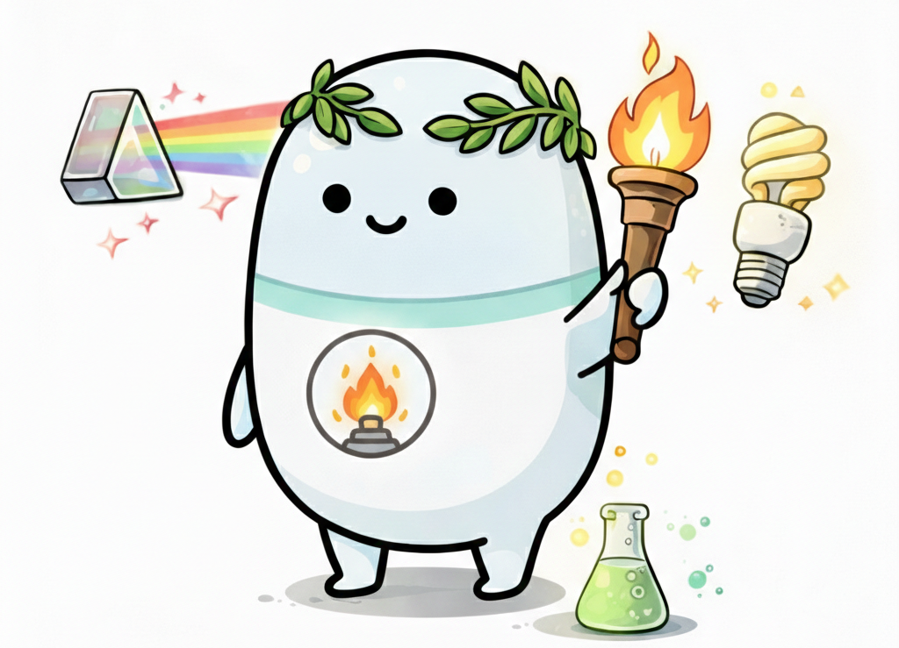
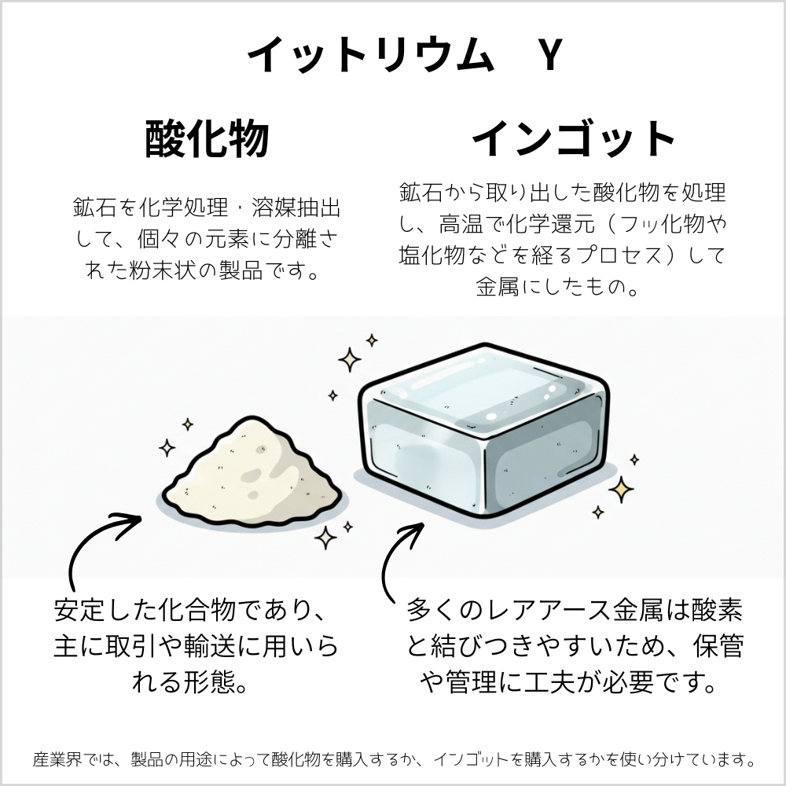
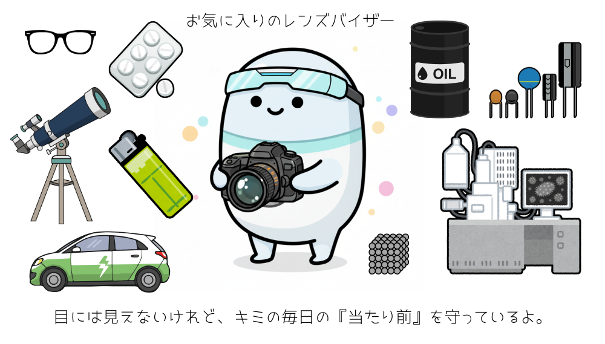

ランタン
Lanthanum

ランタンは、元素で、『レアアース（希土類元素）』と呼ばれる17種類の一つです。
🔮 擬人化キャラの性格
一見するとおっとりして柔らかい雰囲気ですが、実は内面に熱いエネルギーを秘めています。人をまとめる才能があり、責任感が強く、周囲に安心感を与える「太陽」のような存在です。

🧪 リアルな元素の特徴
ナイフで切れるほど柔らかい銀白色の金属で、水と反応して水素を発生させるほど活動的な性質を持ちます。 光学ガラスの性能を高める役割や、高温超伝導の研究材料としても欠かせない存在です。
| 名称 | ランタン | 記号 | La |
|---|---|---|---|
| 番号 | 57 | 原子量 | 138.90552 |
| 密度 | 6.15 g/cm³ | 原子半径 | 約187.7pm〜195pm |
| 分類 | 遷移金属(ランタノイド) | ||
💎 ランタン、実際はどんなもの？

レアアースは一人ずつ（単体）で活躍するだけでなく、みんなが混ざり合った『ミッシュメタル』という形でも私たちの生活を支えています。
ミッシュメタルは、用途に合わせてさまざまな形で出回っています。
- インゴット（塊）: 鉄鋼の不純物を取り除く添加剤として。
- ロッド（棒状）や小球: ライターの石（発火合金）として火花を散らすために。
- プレート（板状）: 水素吸蔵合金や磁石の原料として。


ランタンはレアアースの中では比較的存在量が多く、様々な工業分野で機能性材料として活躍しています。カメラ・望遠鏡・メガネ、ライターの発火合金、電気自動車（EV）ニッケル水素電池の材料、 腎不全の治療薬（リン吸着剤）、ネオジム磁石の添加剤、セラミックコンデンサ、石油精製の触媒など。